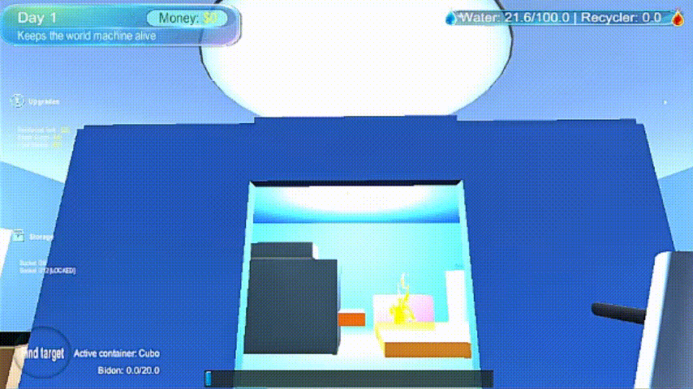

Un prototipo nacido de la fascinación por el género Incremental y la estética Frutiger Aero. Lo que comenzó como una simple máquina de hielo terminó evolucionando en un complejo sistema de robots, núcleos bombeantes y tecnología médica retro-futurista.